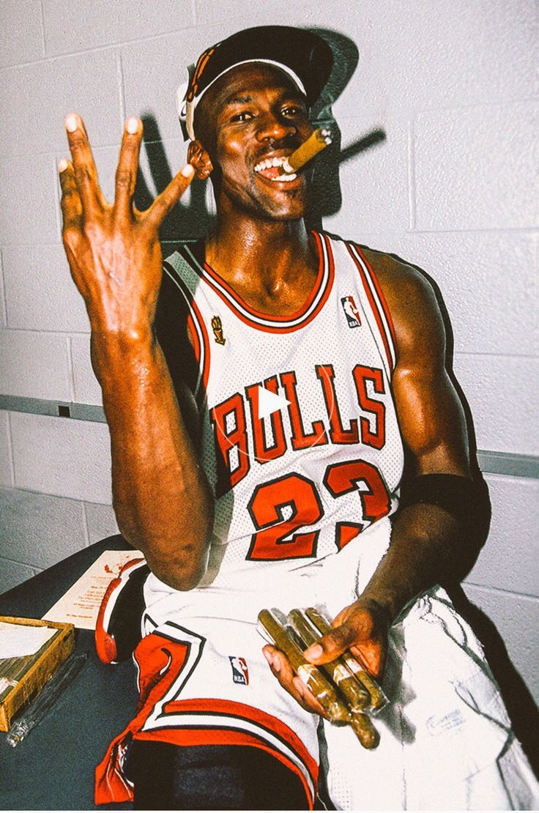

Chicago Bulls
Michael Jordan
"His Airness" / GOAT
ผู้เล่นที่ยิ่งใหญ่ที่สุดตลอดกาล เป็นมาตรฐานของความสมบูรณ์แบบทั้งเกมบุกและเกมรับ โดดเด่นด้วยการเหินเวหาดังค์ ท่ายิง Mid-range Fadeaway ที่ยากจะป้องกัน และหัวใจนักสู้ที่พาทีมคว้าชัยชนะ
Signature Move: Fadeaway Jumper, Free-throw line dunk
- 🏆 6x แชมป์ NBA
- ⭐ 5x ผู้เล่นทรงคุณค่า (NBA MVP)
- 🥇 10x ดาวซัลโวสูงสุดของลีก (Scoring Champion)